The "ene" (C=C–Z–H) and "enophilic" (X=Y) moieties of an intramolecular ene reaction may assume different relative orientations that depend on the nature of the linking structure. The most common relationship is Type I, in which the enophile is joined to the alkene carbon farthest from the Z–H group. Type II reactions have the enophile joined to the alkene carbon bearing the Z–H group, and in Type III reactions the enophile is linked directly to the Z atom. These different arrangements are defined in the following diagram, where the X,Y & Z atoms are colored blue, and the transferred hydrogen is green.. Most intramolecular ene reactions, including earlier examples, are Type I.
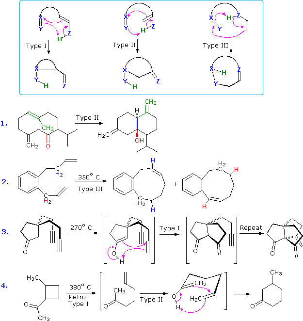
Equation 1. demonstrates a Type II ene reaction in which the enophile is a carbonyl group (colored red). The alkene moiety is colored green, and the new sigma-bond is blue. Equation 2. is a rare example of a Type III ene reaction. There are actually two different ene reactions that take place, and these may be distinguished by the location of the product double bond and the origin of the transferred hydrogen atom (colored red and blue in the above illustration). The last two examples show an interesting variant of the ene reaction in which the enol tautomer of a carbonyl function serves as the "ene" component, and a carbon-carbon double or triple bond is the "enophile". Reaction 3 has two equivalent alkyne chains suitably oriented for a Type I reaction, and both engage sequentially to yield a novel tricyclic "propellane" compound. There are two ene transformations in equation 4. The first is a Type I retro ene reaction, facilitated by relief of ring strain. The second is a Type II ene cyclization. An alternative Type III ring closure to 1-methyl-3-cyclohexenol does not occur.
This page is the property of The Edvibe Team. Comments, questions and errors should be sent to contact@edvibe.co.ke. These pages are provided to the IOCD to assist in capacity building in chemical education. 05/05/2013
Woodward and Hoffmann's landmark review, "The Conservation of Orbital Symmetry", Academic Press, 1970, provides one of the best introductions to the use of orbital correlation diagrams, and the following discussion is derived from this source. In applying orbital correlation analysis, care must be taken to recognize the pertinent σ and π molecular orbitals and their delocalization as required by the symmetry of the transition state. This must be done for both the bonding and antibonding orbitals, and when necessary for n (nonbonded pair) orbitals. The following principles should be observed: 1. Bonding orbitals undergoing significant change in the reaction, and their antibonding counterparts, should be identified. Normally, these are orbitals associated with the curved arrow description of a reaction. 2. If polyene moieties are involved, all the molecular orbitals of that conjugated system must be used. 3. Ignoring non-participating substituents and heteroatoms, the symmetry elements of the essential molecular skeleton must be identified. All orbitals not clearly symmetric or antisymmetric with respect to these molecular symmetry elements need to be mixed or delocalized until they become so. In this respect, the only important symmetry elements are those that bisect bonds that are made or broken in the reaction. Mixing is usually required for σ orbital analysis. 4. Each bonding and antibonding orbital included in the correlation is assigned one or more symmetry designations, S for symmetric, A for antisymmetric, depending on its fit with each characteristic symmetry element. 5. The molecular orbitals are then arrayed according to their energy (increasing vertically), and location on the reaction coordinate (horizontally). Correlations of reactant and product orbitals are drawn so that orbitals of like symmetry are connected. In making these correlations, lines connecting orbital pairs of opposite symmetry may cross, but lines connecting orbitals of the same symmetry may not.
To illustrate this method of analyzing pericyclic reactions, we shall use a suprafacial cycloaddition reaction. The essential elements of the [4+2] Diels-Alder reaction are shown at the top of the following diagram. As noted in principle 3 above, substituents on the diene and dienophile can be ignored. Consequently, only the three π-electron functions of the reactants need to be considered. Corresponding to these, there are three new bonding orbitals in the product, two σ-orbitals and one π-orbital, and these must also be incorporated in the correlation diagram. The symmetry of all participating orbitals must be evaluated before the diagram is constructed. Two symmetry properties of an isolated double bond were described earlier, and may be applied to the dienophile reactant. For the remaining orbitals a plane perpendicular to the molecular plane is used, as shown in green in the diagram. The π- molecular orbitals of 1,3-butadiene were also described in an earlier section. Because of the geometrical requirements for cycloaddition, the s-trans conformation used in that example must be changed to the s-cis conformation. To illustrate, the two bonding π-orbitals of the s-cis diene are shown. The new σ-bonds in the product must be evaluated together (mixed), note principle 3 above. Two delocalized σ-bonding orbitals of different symmetry are thus produced.
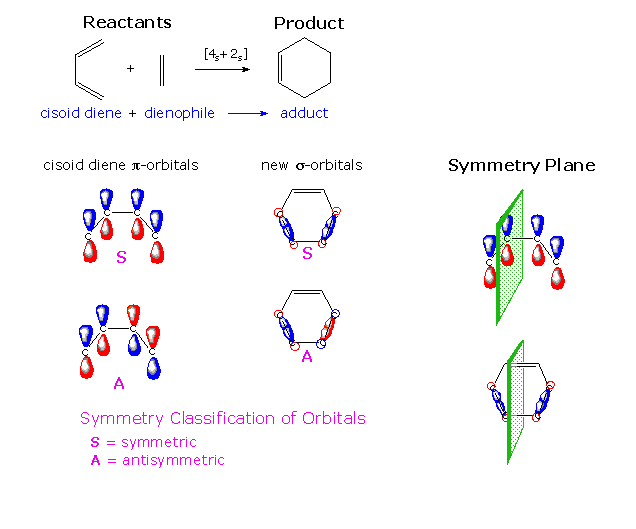
The essential molecular orbitals for this suprafacial cycloaddition reaction may now be arrayed according to their energy and location on the reaction coordinate. This array will be displayed by clicking on the above diagram. Bonding orbitals are designated either σ or π, and antibonding orbitals by an asterisk. Mixing the σ-bonds leads to two energetically different bonding orbitals (σ1 & σ2). Likewise, there are two different antibonding orbitals (σ3* & σ4*).An approximate atomic orbital energy level is shown by the horizontal green dashed line, which separates the bonding and antibonding orbitals. A vertical light blue line separates reactant and product orbitals. Symmetry designations for each orbital are determined relative to the perpendicular symmetry planes shown in the first diagram. Once these symmetries are noted, correlations of reactant and product orbitals may be drawn so that orbitals of like symmetry are connected. By clicking on the diagram a second time, these symmetry assignments and correlation lines will be added to the display. The six electrons that occupy the bonding orbitals of the reactant functions are shown as light blue paired arrows. Since these bonding reactant orbitals correlate with product bonding orbitals, this is considered to be a symmetry-allowed transformation.
It is constructive to compare the allowed [4s + 2s] cycloaddition with a [6s + 2s] analog. To make this reaction as favorable as possible the double bonds of the hexatriene reactant are placed in a seven membered ring, so that the ends of the conjugated π-electron system are located close together. The appropriate σ and π-orbitals are depicted in the following diagram, and by clicking on the diagram the mirror plane symmetries and correlation lines will be displayed. Clearly, correlation lines from the π3 and π4* orbitals of the reactant triene to the π2 and π3* orbitals of the product diene cross the bonding/antibonding transition (dotted green line). Consequently, this [6+2] suprafacial thermal cycloaddition is classified as symmetry forbidden.
If the cycloheptatriene is electronically excited by absorption of 260 nm light, one of the electrons in the π3 bonding orbital is promoted to the π4* antibonding orbital. Once this happens, as shown by clicking on the diagram a second time, the occupied excited state orbitals correlate with excited state product orbitals, and the photochemical cycloaddition is symmetry allowed. This discussion of the [6+2] cycloaddition has assumed a suprafacial configuration, e.g. [6s + 2s]. The possibility of an alternative antarafacial cycloaddition should also be considered. This is illustrated in the following diagram, and requires a nearly right angle approach of the double bond reactant to the end carbons of a planar triene conformation. The methylene group that closes the seven membered ring must be removed to permit this orientation, as shown by the second equation. A mirror plane no longer provides adequate symmetry characterization of the participating molecular orbitals, so a C2 rotational axis, two views of which are shown at the bottom of the diagram, is used instead. The alkene single bonds are colored green in these drawings.
A correlation analysis of the orbitals involved in this [6a + 2s] cycloaddition will be displayed here by clicking on the diagram. This mode of cycloaddition is seen to be a symmetry allowed thermal process. However, this is not an easily achieved reaction because the necessary coiled conformation of the triene is present in very low concentration. Since the [14+2] cycloaddition noted earlier has a heptaene reactant that is confined in a suitable orientation, the corresponding antarafacial cycloaddition is facilitated, and in fact takes place.
Orbital correlation diagrams for other kinds of pericyclic reactions may be constructed and used for evaluation. The Woodward & Hoffmann review provides examples, as does the excellent Imperial College site. Additional examples will not be supplied here, since the "Frontier Orbital" approach is more easily applied, in the opinion of the author.
In describing pericyclic reactions the reorganization of electrons may be represented by a cycle of curved arrows - each representing the movement of a pair of electrons. Many common pericyclic reactions having similar characteristics (e.g. [4+2] suprafacial cycloadditions & [1,5] sigmatropic shifts, as well as disrotatory electrocyclic reactions of trienes) require three curved arrows, and are therefore cyclic six-electron transformations. The similarity to the conjugated six π-electron ring of benzene has led many chemists to designate the cyclic transition states of these reactions as aromatic. Extending this viewpoint, we note that suprafacial [6+4] and [8+2] ten-electron cycloaddition reactions, but not [6+2] eight-electron cycloadditions have been observed. Likewise, six-electron [1,5] sigmatropic shifts are common, but four-electron [1,3] shifts are very rare. A comparison of these facts with the Hückel Rule for aromaticity is suggestive, leading to the designation of 4n+2 pericyclic reaction transition states as Hückel transition states.
A short review of Hückel's contribution will be helpful in using this approach. A linear chain of n conjugated p-atomic orbitals overlap to generate n π-molecular orbitals, as shown for n=6 on the left of the following diagram. The lowest energy π-orbital has no nodal surface, other than that defined by the plane of the molecule. The next higher energy orbital has one node, perpendicular to the molecular plane (colored green), and the other orbitals have increasing numbers of nodes, paralleling their different energies. The three lowest energy orbitals are bonding, and the three highest energy orbitals are antibonding. To examine a model of the p-orbital components of 1,3,5-hexatriene pi-orbitals.
To examine the actual molecular orbitals of 1,3,5-hexatriene
If this linear array of p-orbitals is coiled so that the ends may be joined by a sigma bond, the resulting cyclic conjugated system (that of the annulene benzene) is markedly changed by the symmetry of the ring. Hückel showed that the six π-orbitals are now arrayed in four energy levels or shells. The lowest level has a single molecular orbital, but the next two levels each hold two equal energy (degenerate) orbitals. The last and highest energy orbital then occupies a fourth shell. As before, the three lowest energy orbitals (shown here) are bonding, and the others are antibonding. The number of nodes a given orbital has is determined by the number of phase changes encountered in one circuit of the ring. The degenerate bonding orbitals π2 and π3 each have two nodes where the nodal planes (colored green) intersect the ring. The complete set of benzene molecular orbitals was shown earlier in this text.
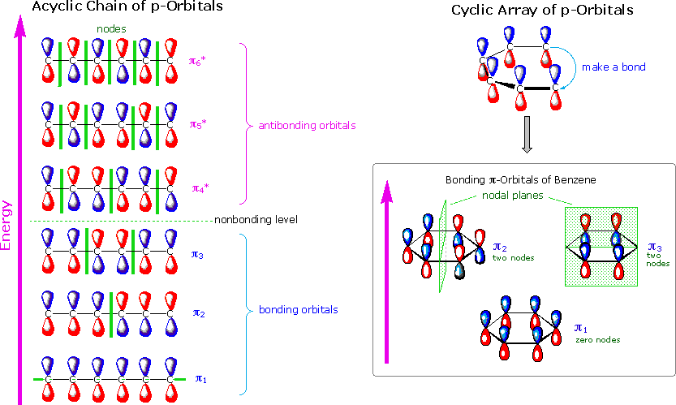
Benzene was not the only annulene described by Hückel, and a diagram displaying the π orbital energies for ring sizes three to seven will be activated by clicking on the above diagram. These Hückel annulenes (shown at the top of the diagram) are all characterized by a single lowest energy π-orbital having no nodal surfaces, other than the plane of the molecule. Using the terminology of atomic structure, this single orbital represents the first shell of the π-electron system. Pairs of degenerate π orbitals make up the next electronic shells, as shown. The number of nodes associated with each level increase by two, as the energy increases. Electrons are placed in these orbital shells, starting with the lowest energy shell and moving to higher energy shells until all the electrons have been assigned. The aromatic stabilization of benzene comes from its closed shell electronic configuration, i.e. all the bonding orbitals are occupied by electron pairs. Cyclobutadiene, the four membered annulene, has four π electrons, but these do not completely fill the second (non-bonding) shell, and by Hund's rule would produce a diradical. The instability of this 4n electron annulene is thus explained. Cyclopentadienyl anion and cycloheptatrienyl cation both have closed shell configurations and are exceptionally stable relative to other organic ions. Hückel concluded that annulenes having 4n+2 π-electrons would exhibit enhanced (aromatic) stabilization, but those having 4n electrons (e.g. cyclobutadiene) would be especially unstable. The bottom section of the diagram describes a novel set of annulenes created by twisting the p-orbital array before joining the ends. This causes a node or phase change at this junction, and the resulting π-orbitals have been called Möbius orbitals by H. Zimmerman (Wisconsin), in reference to the well known topological surface. The calculated energy levels for these orbitals are shown in the bottom section of the diagram. In contrast to Hückel annulenes, Möbius annulenes have two degenerate π-orbitals in the first shell. Pairs of degenerate orbitals occupy the remaining shells, so a closed shell configuration will necessarily have 4n π-electrons. Such 4n configurations are expected to have aromatic-like stability. No stable Möbius annulenes are known, but a search for such compounds is ongoing. Because the twist in such annulenes disrupts orbital overlap, only large rings are likely to accommodate this feature while retaining conjugation.
An elegant synthesis of a bridged. 16 π-electron Möbius annulene has been reported. For further information Click Here.
The unique characteristics of Hückel and Möbius molecular orbital arrays may be used to analyze pericyclic reactions, thanks to the cyclic movement of electron pairs in their transition states. For example, a suprafacial configuration in cycloaddition and sigmatropic shift reactions is possible without introducing a node into the orbital interactions. Consequently, such reactions have Hückel transition states and will be favored by systems having 4n+2 electron transition states. Similar reactions involving 4n electron shifts will be favored by a Möbius configuration having a node, as in an antarafacial configuration. The two electrocyclic reactions shown below further illustrate this approach. The four-electron example at the top proceeds best by way of a Möbius transition state, so the conrotatory movement involving a node at the sigma bonding site is favored. The second example is a six-electron transformation, and this should occur by way of a Hückel transition state. The absence of a node in that transition state requires a disrotatory movement during the ring closure or opening.
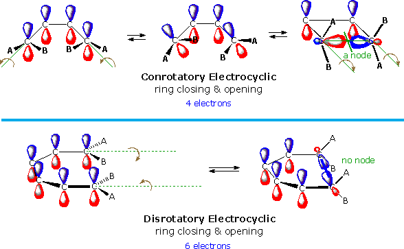
A useful molecular orbital model for analyzing pericyclic reactions has been proposed by Kenichi Fukui of Japan. This frontier-orbital approach is based on the assumption that bonds are formed by a flow of electrons from the highest occupied molecular orbital (HOMO) of one reactant or participating bond to the lowest unoccupied molecular orbital (LUMO) of another reactant or bond. To illustrate, consider the [4+2] cycloaddition of 1,3-butadiene and ethylene to give cyclohexene. The pertinent molecular orbitals involved in this reaction were described elsewhere, and the two combinations of HOMO and LUMO are shown in the following diagram. Note that regardless of which combination is examined, the terminal orbital phases match, indicating a bonding interaction. Since the dienophile often has electron-withdrawing substituents and the diene is usually electron rich, the electron flow pattern on the left seems to best represent the course of most Diel-Alder reactions.
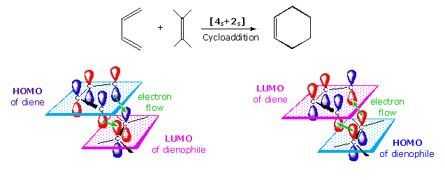
This frontier orbital approach to cycloaddition reactions is general, and is simple to apply thanks to the alternation of terminal orbital phase relationships as a polyene changes from a 4n electron system to a 4n + 2 electron system. By clicking on the above diagram, these phase relationships will be displayed for HOMO and LUMO of polyenes in both classes. Only the terminal orbital phases (colored in the diagram) are important for frontier orbital analysis. The frontier orbital analysis of a [6s + 2s] cycloaddition reaction will be demonstrated by clicking on the diagram a second time. An antibonding node is present in both HOMO-LUMO combinations (one is shown), so this reaction is orbital symmetry forbidden. An additional feature of this treatment of cycloaddition reactions is its rationalization of the tendency of Diels-Alder reactions of cyclic dienes to form endo adducts preferentially. This was noted earlier, and is further illustrated in the following diagram. The first two equations are straightforward examples of the endo predilection of substituents or rings (colored green) attached to a bicyclic ring system. The third equation shows a more subtile case of the same orientational factor, which essentially favors that [4+2] transition state in which unsaturated substituents on the dienophile are directed toward the diene double bonds. By clicking on this diagram, the secondary orbital bonding interaction that stabilizes the endo transition state for a typical Diels-Alder reaction will be displayed.
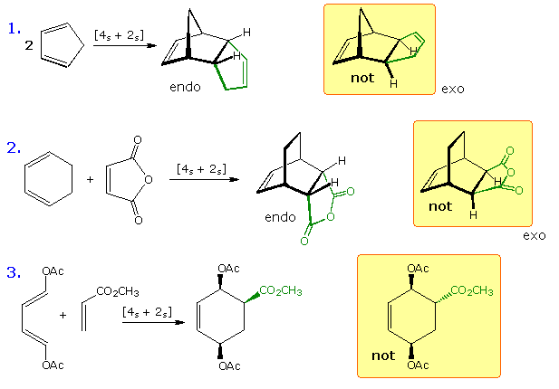
Not all cycloaddition reactions favor endo products. The predominant product from the [6s + 4s] reaction shown earlier is the exo adduct. Frontier orbital analysis of this case demonstrates that secondary orbital interaction destabilizes the endo transition state.
The stereochemistry of electrocyclic reactions is easily predicted by frontier orbital analysis. Two examples are shown in the following diagram. The upper reaction represents the thermal interconversion of 1,3-butadiene and cyclobutene; the lower reaction shows the similar interconversion of 1,3,5-hexatriene and 1,3-cyclohexadiene. The HOMO orbital of the open chain isomer for each example is displayed on the left. In order to close the ring, the terminal p-orbital components of this orbital must be rotated so that identical phased lobes can interact to form a new sigma-bond (green line). It should be evident that the orbitals of the upper example must rotate in the same direction (conrotatory), either clockwise or counter-clockwise, to permit this bonding to occur. The terminal orbitals of the lower example must rotate in opposite directions (a disrotatory motion) to achieve the same bonding interaction. The alternation of terminal orbital phases in the HOMO of 4n and 4n+2 polyenes, as noted above, is therefore a predictor of the general course of electrocyclic reactions.
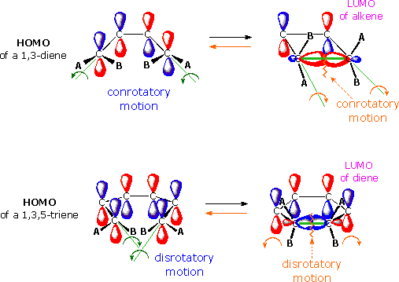
The reverse ring opening electrocyclic process (orange arrows) is conveniently treated by assuming a flow of electrons from the HOMO of the sigma bond to the LUMO of the π-electron system. Of course, the same configurational motion is predicted by this analysis, and is in fact required by the principle of microscopic reversibility. To examine a model of the p-orbital components of 1,3,5-hexatriene pi-orbitals.
Accounting for the facility of [1,5] hydrogen shifts in contrast to the rarity of documented [1,3] shifts is a sine qua non of pericyclic reaction theory. One frontier orbital approach to these reactions establishes the sigma C–H bond as the HOMO site, and the adjacent pi-orbital(s) as the LUMO. In the following diagram these entities are defined for both the general [1,5] and [1,3] relationships. Since it is necessary for the origin and terminus of a hydrogen shift to be near each other, a potential [1,5] system must be coiled in an appropriate manner (top-central formula) for such a rearrangement to occur. As shown, there is a phase correlation of HOMO and LUMO termini, rendering these reactions symmetry allowed. Note the stereoelectronic requirement that the sigma bonds be oriented parallel to the pi-orbital system. The lower row shows a similar analysis of the suprafacial [1,3] shift, which is found to be symmetry forbidden. A previously described [1,7] hydrogen shift is antarafacial with respect to the triene moiety, and is therefore symmetry allowed. If the π-electron system is electronically excited by the absorption of light, the LUMO becomes the next higher energy orbital, and [1,3] shifts are symmetry enabled. By clicking on the diagram an interesting example of such a rearrangement will be displayed. Sigmatropic [1,5] hydrogen shifts are prohibited in this example, because the diene is constrained in a s-trans-configuration so that origin and terminus of such a shift are kept far apart. The conjugated diene chromophore absorbs UV-light, and once the [1,3] shift has occurred the unconjugated double bonds no longer absorb 245 nm light. Two hydrogens at C-6 are candidates for this shift, but only the axial hydrogen (colored orange) has the necessary parallel orientation (a stereoelectronic discrimination). Other photochemical products were formed in this reaction, and these may include an isomeric diene formed by a [1,3] shift of the axial C-12 hydrogen.
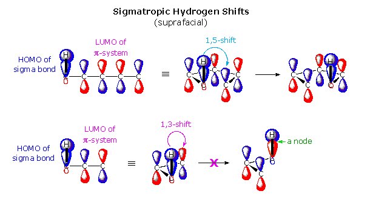
When considering the sigmatropic shift of an alkyl group, such as methyl, the possibility of antarafacial bonding to carbon must be considered. Although such rearrangements are rare, they have been observed along with the expected inversion of configuration at the migrating group. By clicking on the above diagram a second time, the general form of these rearrangements will be shown together with two examples. The [1,3] shift of a methyl group (colored green) is pictured at the top. The phases of the central p-orbital component are colored light blue and orange, rather than blue and red, to avoid confusion with the pink and purple phases of the methyl carbon p-orbital in the transition state. Clearly, symmetry allowed 1,3-bonding takes place with inversion at the methyl carbon. In the two example shown at the bottom (A & B) the migrating group is marked by an asterisk.
The most commonly used sigmatropic reactions are those involving a [3,3] shift. Of these, the Cope rearrangement of 1,5-dienes is a prominent example, and the orbital assignments for this reaction are shown in the following diagram. One of the terminal double bonds (for our purpose it doesn't matter which) is defined as the LUMO partner. The central sigma bond (joining C-3 and C-4 of the diene), together with the remaining double bond, is then the HOMO for this analysis. As shown on the top of the diagram, the [3,3] shift is found to be symmetry allowed. An alternative interpretation is shown in the shaded box. Here, the 1,5-diene is dissected into two allylic radicals. Because an allylic radical has three π-electrons, the HOMO is π2. The central carbon atom of this fragment is the locus of a node, so the terminal carbons have opposite phases. Bonding at both ends of the bis-allylic intermediate is therefore allowed.
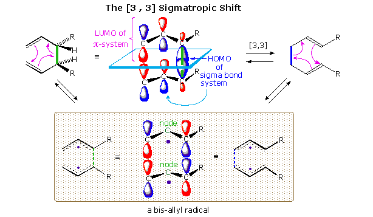
The spatial orientation of the 1,5-diene may assume either a chair-like or boat-like transition state configuration. These possibilities will be displayed by clicking on the diagram. In each case the HOMO and LUMO components are identified, and the orbital lobes in the chair drawing are shaded to show their relative orientation. Specific cases proceeding by both transition states are known, but in general, acyclic reactants prefer the chair-like pathway. The boat-like transition state is possibly destabilized by a non-bonding secondary interaction involving orbitals at C-2 and C-5. Thermal rearrangement of the diastereomeric 3,4-dimethyl-1,5-hexadienes to isomeric 2,6-octadienes clearly shows a preference for a chair-like transition state. These reactions will be displayed above by clicking on the diagram a second time. The top row illustrates reaction paths for the racemic diastereomer (R = CH3). The conformational equilibrium between the diaxial conformation shown left of center and the diequatorial conformer to its right will strongly favor the latter (>99%). Assuming similar activation energies for [3,3] sigmatropic shifts from each, the formation of (E,E)-2,6-octadiene is expected to predominate. The meso-isomer depicted on the left of the second row exists as a mixture of equivalent axial-equatorial conformers, each of which rearranges to (E,Z)-2,6-octadiene. Rearrangement of these diastereomers by way of a boat-like transition state would generate a different set of products, as shown on the left of the third row for the meso isomer. The data in the following table clearly show a strong preference for a chair-like transition state, when that path is available to a rearranging system.
Cope Rearrangement of racemic and meso-3,4-Dimethyl-1,5-Hexadiene to 2,6-Octadiene
Octadiene Isomer
Hexadiene Isomer
Finally, the example on the right of the second row demonstrates that a [3,3] sigmatropic rearrangement may serve to transmit chirality from an existing stereogenic center to one that is newly formed. Once again, chair and boat-like transition states control this transfer in a different manner.
Since ene reactions are often stereospecific, and do not seem to proceed by way of discrete intermediates, they are sometimes grouped together with other pericyclic reactions. A frontier orbital analysis of the forward ene reaction is shown in the following diagram., and displays many features of the [3,3] sigmatropic shift. Thus, hydrogen atom transfer from an allylic site to a double bond is seen to be symmetry allowed with respect to the HOMO of an allyl radical and the LUMO of an alkene (right side of diagram). There is also symmetry correlation between the HOMO and LUMO terminal sites of the ene and enophile reactants, as defined on the left. Ene reactions proceed best when the enophilic double bond is electron deficient, and the ene reaction is often catalyzed by Lewis Acids.
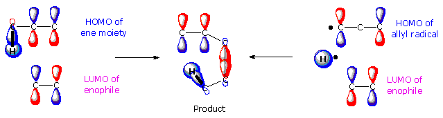
The retro ene reaction fragments a molecule into two pieces, each having a new double bond. Concerted eliminations of this kind are potentially useful for getting rid of unwanted functions, or for the introduction of carbon-carbon double bonds. The following diagram shows two such applications. In the initial display a reference retro ene reaction is written in the shaded box on the left, and two decarboxylation reactions are shown to the right. The top reaction represents the decarboxylation of β-ketoacids and malonic acids, that was an important step in syntheses using acetoacetic ester and malonic ester starting materials. The second reaction demonstrates that this simple elimination may occur with any β,γ-unsaturated carboxylic acid.
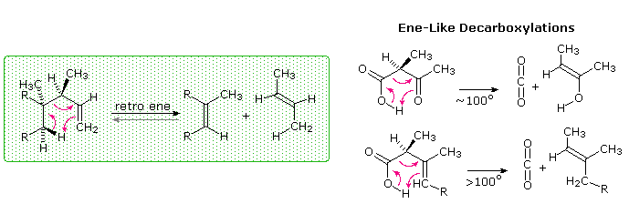
A second set of elimination reactions will be displayed by clicking on the diagram. The first ester pyrolysis reaction requires strong heating, but the xanthate ester in the second example decomposes under much milder conditions. The small thiocarbonate fragment undergoes further decomposition to methane thiol and COS. These eliminations are useful for converting alcohols to alkenes by a syn-mechanism. Two useful related eliminations, that are not classical retro ene transformations, are the selenoxide and amine oxide eliminations shown by clicking on the diagram a second time.
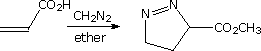
Dipolar cycloaddition reactions take place between unsaturated hetero atom compounds, such as diazoalkanes, alkyl and aryl azides, nitrile oxides and nitrones, and alkene or alkyne functions. Although the former reactants are neutral, their Lewis structures have formal charges, and may be written as 1,3-dipoles. The alkene and alkyne functions to which the dipoles add are called dipolarophiles. Examples of some common 1,3-dipole reagents are provided at the top of the following diagram. The terminology used for these reactions may be confusing unless one pays careful attention to the electronic structures of the dipolar reactants. Resonance structures for three of these are drawn in the shaded box. In general, four resonance canonical structures may be written for each compound. Two have adjacent or 1,2-charge separation, and two have the 1,3-dipolar charge separation noted above. The 1,2-dipolar structures retain valence shell octets for all heavy atoms, suffer less charge separation, and have one more covalent bond than do the 1,3-dipolar structures. Therefore, the most representative Lewis structures for these compounds are 1,2-dipoles, not 1,3-dipoles. Another factor in identifying the best structure for a given compound is electronegativity. Negative charge is best on the most electronegative atom, and positive charge on the least electronegative atom. In the examples drawn for the nitrile oxides and nitrones, the left hand structure is the best 1,2-dipole that can be written. Similar structures are written following the names in the list at the top of the diagram. Finally, the general equation written at the bottom demonstrates the danger of thinking about these reactions as a simple addition of a 1,3-dipole to an unsaturated function. Movement of electron pairs out of the dipolarophile to one end of the dipole, with a second electron pair going from the dipole back to the dipolarophile accounts for only four electrons. As shown by the curved arrows on the right, the cycloaddition actually proceeds by a six pi-electron transition state, and is suprafacial.
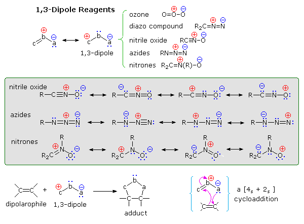
By clicking on the diagram, five examples of dipolar cycloaddition reactions will be displayed. Examples 1 and 2 show participation of nitrile oxide and diazoalkane reactants. The two phenyl azide additions in equations 3 and 4 demonstrate the suprafacial stereospecificity of the addition. Finally, reaction 5 shows an intramolecular cycloaddition reaction. It is evident from these examples that a high degree of regioselectivity characterizes the cycloaddition of unsymmetrically substituted reactants. Calculated molecular orbital coefficients have proven effective in predicting regioselectivity. Unfortunately, no simple mnemonic seems to work for a majority of the known examples.